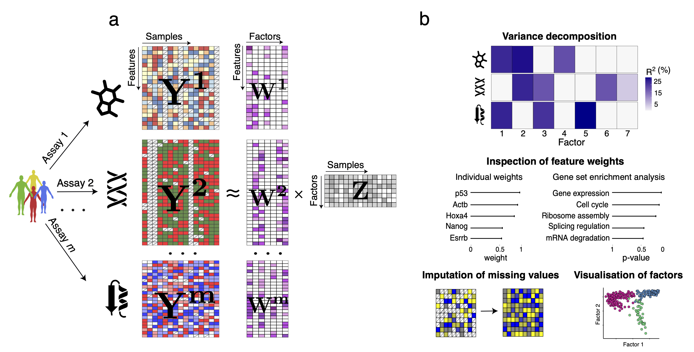

Introduction to MOFA
MOFA+
Multi-Omics Factor Analysis is a model that provides a general framework for the integration of multi-omic datasets in an unsupervised manner, developed by Argelaguet et al. (2018 and 2020).
It can be viewed as a versatile and rigorous generalization of PCA, capable of inferring an interpretable, linearly-reduced, low dimensional representation in terms of a few latent factors that capture the driving sources of variation across all data modalities.

Image taken from MOFA2 webpage
test h1